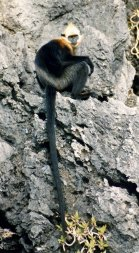
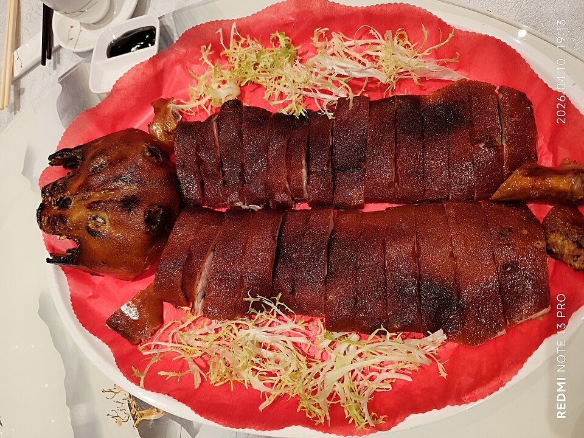
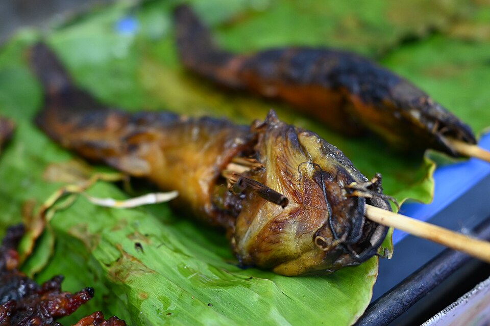
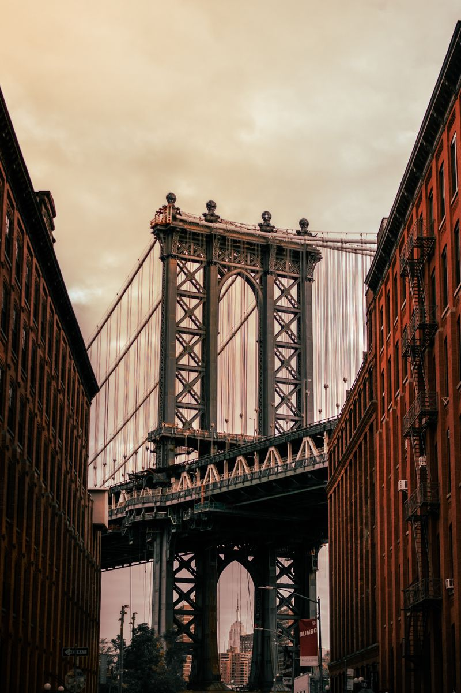
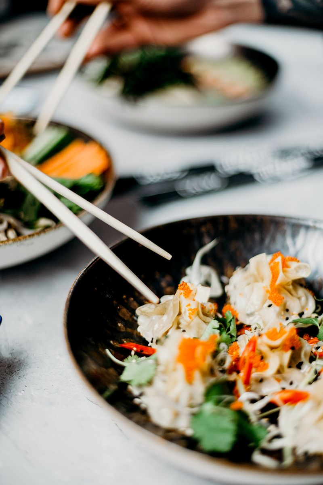
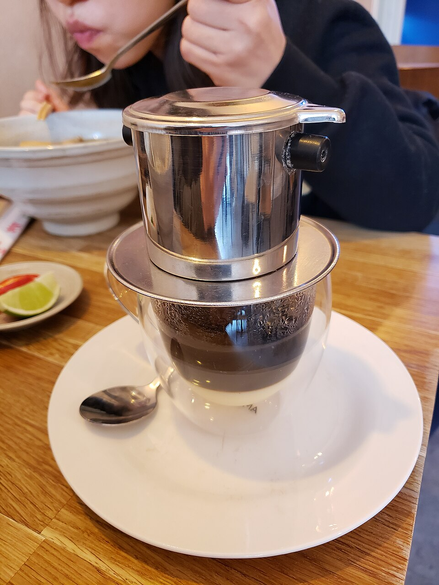

Day 1 / Friday
9月4日 · 漂流与古城
河陆空三连漂 + 千年古城非遗打铁花
三天两夜，穿越中越边境的喀斯特画廊——瀑布轰鸣、田园骑行、峡谷漂流、千年古城打铁花
崇左，位于广西西南边陲，与越南接壤。这里有亚洲最大的跨国瀑布、比大熊猫更稀有的白头叶猴、千年骆越文明留下的花山岩画，还有被《花千骨》取景后声名鹊起的明仕田园。九月初秋，水量充沛，气温宜人——正是出发的最好时节。
不去桂林挤人海，中越边境这个隐世小城美炸了
9月3日晚出发，9月6日下午返沪
Day 0 · 9/3 周四晚
上海浦东/虹桥 ✈️ 南宁吴圩，午夜抵达后机场酒店休息。
Day 1 · 9/4 周五
早班动车至崇左南站取车 → 新和龙腾漂流🛶 → 太平古城🏮 + 非遗打铁花
Day 2 · 9/5 周六
自驾至德天跨国瀑布💦 → 硕龙镇午餐 → 明仕田园骑行🚴 → 返回崇左
Day 3 · 9/6 周日
白头叶猴保护区看猴🐒 → 还车 → 动车回南宁 → ✈️ 返沪
河陆空三连漂 + 千年古城非遗打铁花
亚洲最大跨国瀑布 + 喀斯特田园骑行
.jpg)
10:30–13:00 · 大新县硕龙镇 · 中越边境
亚洲第一、世界第四大跨国瀑布，年均水量是黄果树瀑布的三倍。乘竹筏驶近瀑布正下方，漫天水雾扑面而来，左侧是中国的德天瀑布，右侧便是越南的板约瀑布——两国水幕隔河相望，奔腾而下。九月水量充沛，是最佳观赏季。
查看攻略14:30–17:00 · 大新县堪圩乡
典型的桂南喀斯特地貌，峰林倒映稻田水面，被称为「小桂林」。《花千骨》曾在此取景。租一辆自行车沿田间绿道骑行（¥10/天），或乘竹筏漂流明仕河。傍晚 17:00–18:00 逆光时分，稻浪与峰林在金色光线中构成绝美画面。
查看攻略.jpg)
比大熊猫更稀有的白头叶猴

09:00–10:30 · 崇左市江州区
白头叶猴是中国特有物种，全球仅存于崇左左江与明江之间不足 200 平方公里的喀斯特石山中，比大熊猫更加珍稀。它们每天上午 9 点准时下山觅食——站在甘蔗地里静观「莫西干白发」在树枝间腾跃，是此行最难忘的自然体验。
查看攻略从壮乡簸箕宴到越南滴漏咖啡，中越风味在此交汇

左记正宗渠黎金牌烤猪
脆皮金黄、肉质鲜嫩，蘸上崇左特有的酸粥——发酵米粥的微酸中和油脂，一口入魂。搭配酸粥猪肚和凉拌粉，人均 ¥60–90。
📍 崇左市区 · ¥60–90/人

老街土菜馆 / 越姆娘
新鲜河鱼裹香茅草炭火慢烤，鱼肉吸收香茅的清甜与炭火的焦香。配一碗酸汤牛肉，是德天瀑布旁最地道的边境午餐。
📍 硕龙镇 / 德天景区 · ¥50–80/人

越姆娘好吃餐厅
崇左独创——新鲜百香果的酸甜果肉包裹优质肋排，果香与肉香交融，甜而不腻。德天瀑布景区内的隐藏菜单，人均 ¥50–70。
📍 德天瀑布景区 · ¥50–70/人

阮如玉越南火锅
硕龙镇必打卡——独特的「帽子」造型铜锅，香茅椰浆汤底涮海鲜和牛肉。边境线上的越南风味，人均 ¥70–80。
📍 硕龙镇 · ¥70–80/人

春田越南菜馆
午后小憩——看着咖啡一滴一滴落入炼乳，边境时光在此慢下来。搭配越南春卷和河粉，人均 ¥60–80。
📍 崇左市区 · ¥60–80/人
雷平姐妹粉店
崇左早餐之王——酸笋、豆豉、辣椒、鲜肉爆炒后加汤煮粉，酸辣鲜香。三天行程至少吃两顿，人均 ¥15–25。
📍 崇左市区 · ¥15–25/人
人均 ¥2,855，预算 ¥3,300，余量充足
| 项目 | 明细 | 人均 |
|---|---|---|
| ✈️ 往返机票 | 上海 ↔ 南宁 | ¥1,200 |
| 🚄 高铁 | 机场 ↔ 崇左 | ¥60 |
| 🚗 租车 | 2天 + 油费 | ¥300 |
| 🏨 住宿 | 3晚 × 2间 | ¥433 |
| 🎫 门票 | 漂流 + 瀑布 + 猴园 + 骑行 | ¥278 |
| 🍜 餐饮 | 3天 × ¥150/天 | ¥450 |
| 🎒 其他 | 零食、手信、杂费 | ¥133 |
| 合计 | ¥2,855 |
人均省 ¥445，可升级酒店或加一顿好餐厅